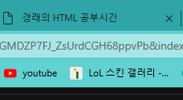

경래의 HTML 공부시간
target="_blank" 는 새 탭으로 열게 해주는 명령어 title="HMTL5 speicification 은 마우스를 가져다데면 툴팁으로 나오는 명령어
a는 앵커로 가장 기본적으로 링크를 말하는 태그이고, 다음과 같이 하이퍼링크를 걸 수 있는 방법은 href 라는 태글 입력해서 사용해
이 글은 어떻게 해야 될까요?
단락을 나타내는 태그
이건 밑줄을 그어주는 태그
픽셀을 떨어뜨리고 만드는 태그 방식

이미지는 img
위의 사진에 대한 내용은 속성이라고 하는 글이다. img 는 굉장이 인기있는 태그이다.
이번 시간에는 부모태그와 자식태그를 배운다.
li의 부모태그는 ul이래
대희
경래
TAB키를 누르면 들여쓰기가 된데, 근데 위에는 ul 태그를 하지 않으 상태에서 TAB키를 눌렀는데, 들어가진 않아. ul이 꼭 필요해보여
다음은, 내가 정했던 숫자를 일일히 바꾸지 않게끔 해줘야 하는 방식이야 이 방식은 ol이라는 걸 쓰는거야 위에있는 걸 예시로 할거야
- HTML
- CSS
- JaveScript
ol은 자동 넘버링을 시켜주는 태그래 와.. 짱이야 ul과 ol의 l은 list 의 약자이며, ol은 orderd list 이고 ul은 unorderd list 약자라고 하네.
부모자식 태그는 항상 따라 다니는 태그인가봐.
이번 시간에는 책의 구조를 만드는 것을 해보는 시간을 한데
title은 책의 제목을 구성하는 것이고, 맨 위에 title 태그를 두고 만들면 다음과 같이 제목이 돼.

이 명령어는 utf-8로 읽으라는 명령어래. 만일 지금 이게 한글이 안된다면 저 명령어와 같이 한글을 이용할 수 있게 명작성하면 돼